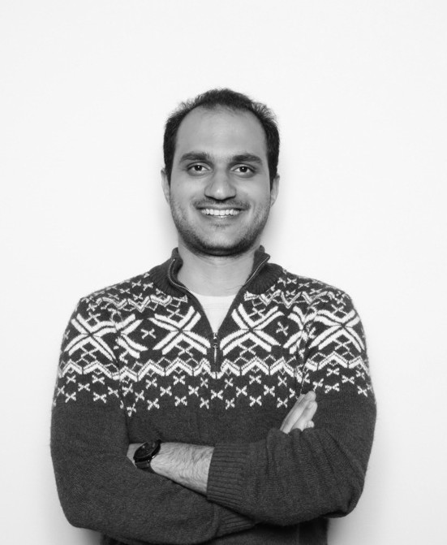

Indexes that are fast on paper and fast on real hardware.
// I'm a second-year PhD student in the SysNet group at the University of Toronto, working with Prof. Niv Dayan at ORCA Lab. I design data structures, analyze them properly, and then make them earn their keep on actual hardware.
about
I'm Sajad Faghfoor Maghrebi (sa-JAAD · fagh-FOOR · magh-reh-BEE) . I work on indexes and the data structures underneath them. What I like about this area is that you have to get two things right at once: the algorithm has to be sound, with real bounds on space and time, and the implementation has to respect the machine, where cache lines, branch predictors, and memory bandwidth decide what is actually fast. I find the best ideas usually come from taking both sides seriously.
// lately: scalable vector indexes, the piece that makes semantic search in AI systems affordable.
education
awards
// Iranian National University Entrance Exam, Jan 2018.
experience
I like understanding things down to the last bit, and I like building things people actually use. The first pulled me into research. The second had me co-founding two companies before I finished undergrad, and it still shapes how I pick problems: worth solving, and worth shipping.
Software engineering (CSCC01, CSC301), data structures (CSCB63), databases twice over (CSC343), intro CS (CSC148), database system technology (CSC443), and lead TA for web programming (CSC309).
The largest e-commerce company in the Middle East. I started on a gnarly refactor of tens of thousands of lines of monolithic product logic, then helped my team carve it into services so it could scale and stay maintainable.
Led the team that built a fast back-testing engine and strategy optimizer for automated trading across crypto, stocks, and forex. Our strategies ran for dozens of traders. I also built the inter- and intra-exchange crypto arbitrage and the live execution platform.
Ran workshops at middle and high schools on how financial markets actually work, from the basic concepts to the mechanics real traders deal with.
projects
Persian and English share far more ancestry than most people expect, and Ali Nourai's etymological dictionary maps it word by word. I turned that dictionary into something you can wander through: 950+ root families and 11,000+ words laid out as a zoomable constellation, derivation trees you can search, lines of classical poetry showing each word in use, and a pathfinder that takes any two words and walks you from one to the other. source
A tool I built to study philosophy properly. Pick a philosopher or a question, like free will or what makes an action moral, and it gives me a short summary of the main positions and then quizzes me on them. The questions are about the ideas themselves: what the argument claims, what the standard objections are, how the different schools answer each other. The material is drawn from the Philosophize This! transcripts, which I can also search directly.
The system our traders ran on every day. I built the backtester, which had to model each market's own quirks, the charts and reports people used to judge a strategy, and the Optuna-based tuner that searched parameter space overnight. Under it all sat a MongoDB service that turned messy feeds from different markets into one clean, queryable history.
The library people reach for when they want Iranian market data in Python. I made price history and order-book fetching fast and async, added the statistical analysis layer, and wrote the tests so it stayed reliable as the exchange changed things underneath us.
Price gaps between exchanges, and between trading pairs on the same exchange, close in seconds. I built a system that spotted them, modeled the order books to estimate how much could actually be filled at that price, and used classical search to plan executions that captured the gap without eating the risk.
contact